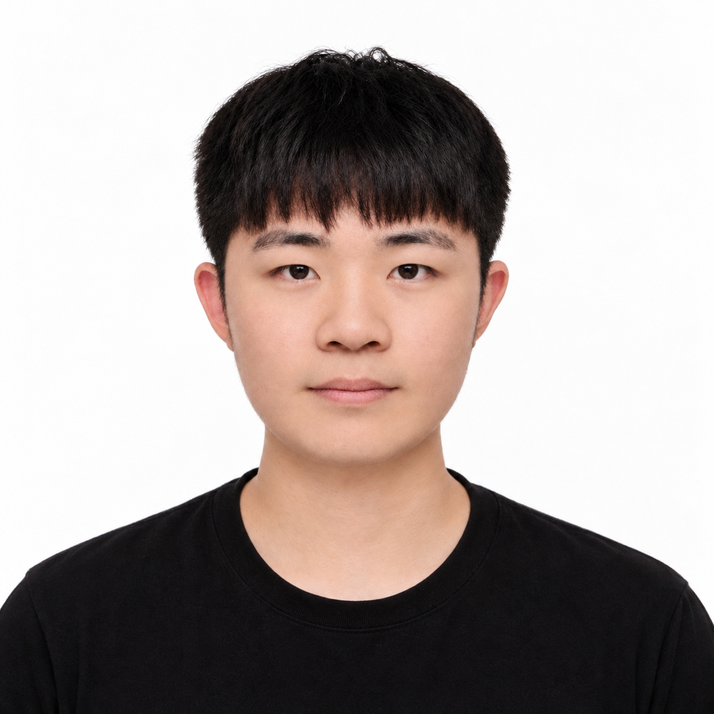

Ajou University
Graduate School of Information and Communication Technology
M.S. in Cybersecurity · In progress
I define problems, uncover what I don’t know,
and enjoy the process of learning.

M.S. in Cybersecurity · In progress
B.S. in Computer Engineering
Graduated in Information and Communication Engineering
Selected by the Republic of Korea Air Force for overseas specialty training, I completed approximately 18 weeks of Cyber Systems Operations training at Keesler Air Force Base in the United States. Alongside 18 U.S. military trainees, I took part in technical instruction and hands-on exercises in English covering networking, Windows, Linux, Active Directory, and cyber defense.
A local homestay gave me firsthand experience of American life and culture. I also compared U.S. and ROK Air Force training systems and prepared a post-training report recommending improvements to the curriculum and structure of training in Korea.
My curiosity extends beyond code. When a problem arises, I start by identifying what I don’t know, then follow the questions to deepen my understanding.
I also enjoy studying human relationships and philosophy: how people think and how we live together. Just as I do with technology, I want to question the things I have taken for granted in life.
I’m documenting my studies as I prepare for the Professional Engineer Information Management examination.
Reflections on the meaning of learning and being human, beyond technology.